People's Republic Development Fund
A step-by-step guide to applying for and managing a PRDF business loan
Every screenshot in this manual was captured from the working portal, not mocked up. Figures shown are from a test application and are illustrative.
This manual shows you how to apply for a PRDF business loan and manage it once it is funded. It follows the screens in the order you will meet them, so you can read it straight through the first time and afterwards open it at whichever section you need.
| Sections 2–4 | Before you apply — what you need, checking that you qualify, and creating your account |
|---|---|
| Sections 5–9 | The application itself — the five steps, your documents, and the declaration you sign |
| Sections 10–13 | After you apply — tracking progress, and your loan account once funds are released |
| Section 14 | What your loan costs, explained |
| Section 15 | If something goes wrong |
| Section 16 | Acceptance and sign-off |
If you get stuck, contact your PRDF loan officer. If you have not been assigned one yet, use the contact details on the PRDF website. Section 15 covers the problems people hit most often, and many can be solved without waiting for help.
Gather all ten documents before you start. You cannot submit your application until every one of them is uploaded, and stopping halfway to find a missing document is the most common reason applications are abandoned.
| Document | What it must be |
|---|---|
| ID Document | Certified copy of the director's or applicant's identity document |
| Proof of Address | Recent proof of business or director address |
| Company Registration (CIPC) | Your CIPC company registration certificate |
| Tax Clearance | SARS tax clearance or tax compliance status document |
| Bank Statements | Three months of business bank statements (you may upload several files) |
| Financial Statements | Latest annual financials or management accounts |
| Vendor Quotations | Three quotations for what you are funding (several files allowed) |
| Central Supplier Database (CSD) Report | Your CSD registration report |
| Purchase Order / Short-Term Contract | The order or contract itself, including validity. Contracts may not exceed three years |
| Trade Reference | A reference from a business organisation or trade reference |
2021/123456/07Browser. Any current version of Chrome, Edge, Safari or Firefox. The portal works on a phone, but uploading is far easier on a computer where your files already are.
Time. As a guide, allow around 10 minutes once every document on the checklist is to hand — it will take longer if you are still gathering them. This is an estimate, not a limit: you can save and come back at any point, so you do not have to finish in one sitting.
Everything in this section works without an account. Start at https://prdf-lms.vercel.app.
The calculator gives you an indicative price before you register anything. Drag the sliders, or click the figure and type directly into it.
It then shows your indicative monthly instalment, total repayment, and estimated interest.
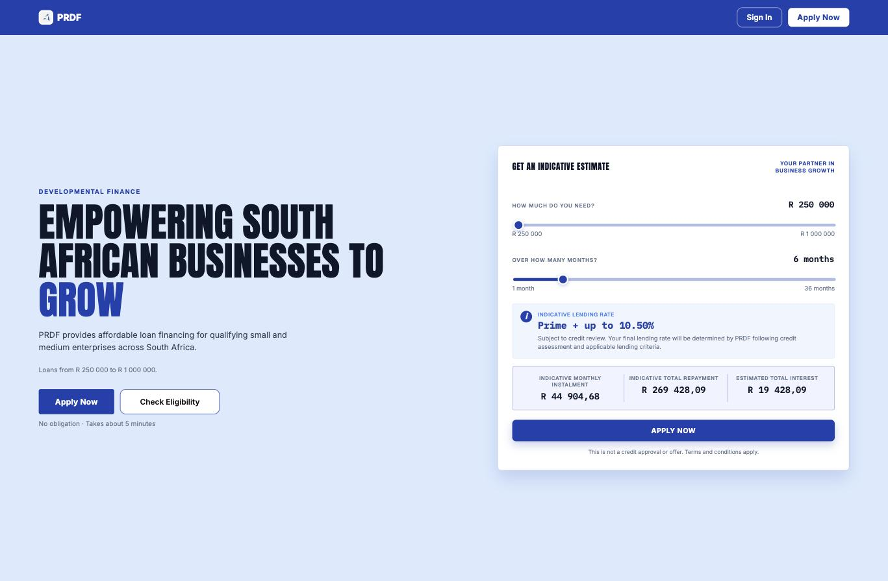
Whatever you set on the calculator is carried through to your application, so you do not have to enter it twice.
Check Eligibility opens a checklist of PRDF's criteria, grouped into developmental impact, ownership and control, and registration and compliance. Tick each one your business meets. A counter at the bottom shows your progress.
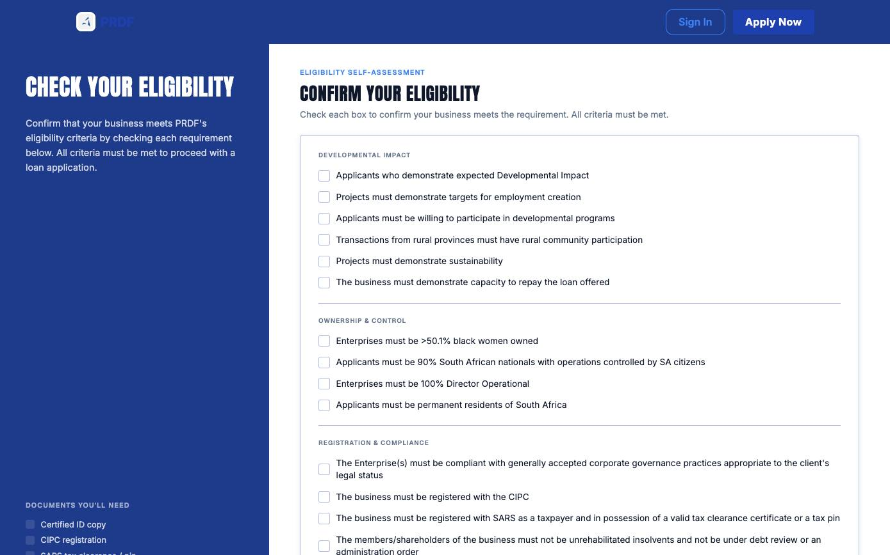
When you click Check My Eligibility you get one of two answers.
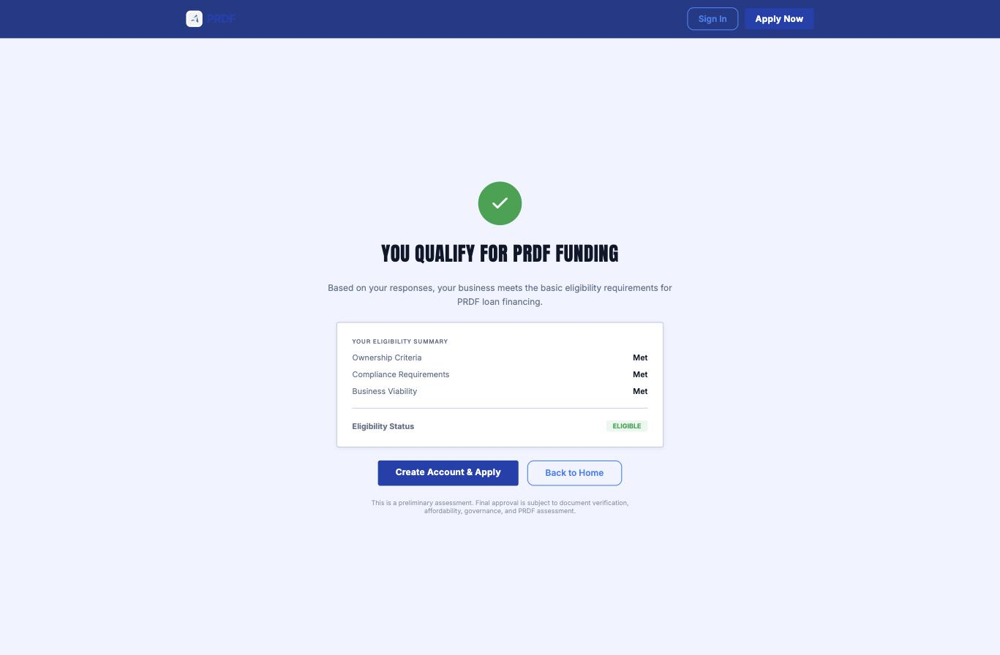
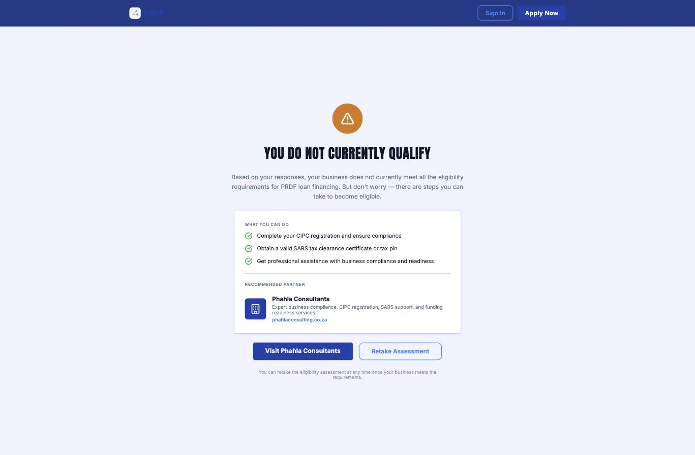
Apply Now, or Create Account & Apply on the result page, opens registration. All five fields are required.
| Field | Rule |
|---|---|
| First name | Cannot be blank |
| Last name | Cannot be blank |
| Phone number | A South African mobile number — 0 or +27, then 6, 7 or 8, then 8 digits. Spaces and dashes are fine |
| Email address | Must be a valid address, and one you can access |
| Password | At least 8 characters |
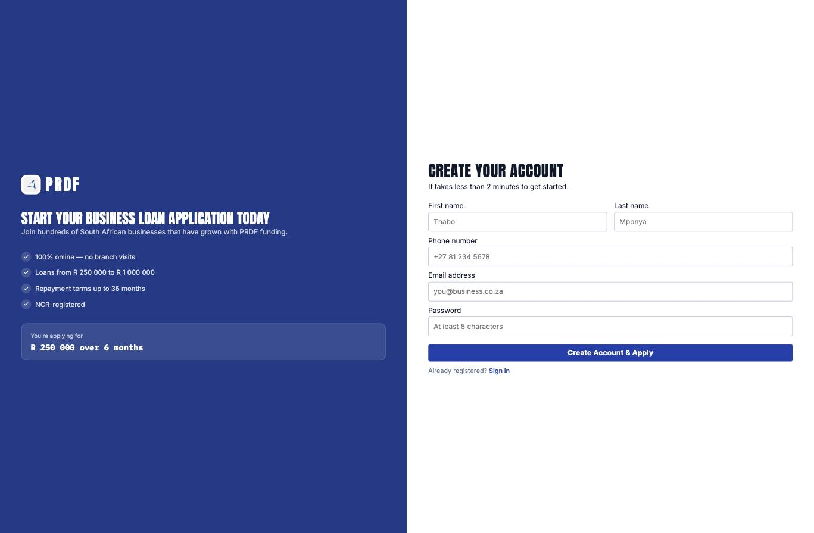
If anything is wrong, the message appears directly beneath that field and the cursor jumps to it. Clicking Create Account & Apply takes you straight into the application — there is no separate confirmation email to wait for.
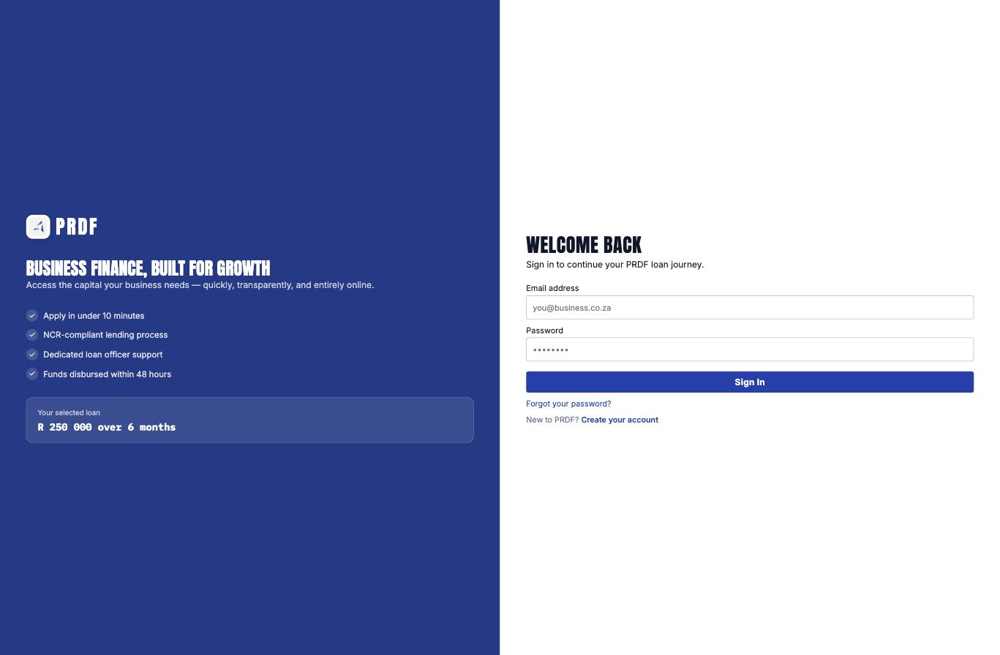
Type your email address into the Email address field first, then click Forgot your password? If you click it with the field empty you will be asked to fill it in.
PRDF emails you a reset link. Open it, choose a new password, enter it a second time to confirm, and the portal confirms the change. The link works once and expires after a short time — if it has lapsed, request another from the sign-in page.
You stay signed in if you close the tab or the browser and come back later, so you will not lose a draft that way. Behind the scenes your sign-in is renewed about once an hour while you use the portal; you will not notice this. If a renewal cannot be completed — most often because the connection dropped — you are returned to the sign-in page, and nothing you have saved is lost. Logout, at the top right of every page, is the reliable way to end your session, and the one to use on a shared computer.
| Menu item | What it is for |
|---|---|
| Home | Your dashboard: current application, key figures, recent activity |
| Applications | The five-step application form |
| Documents | Your document checklist and uploads |
| My Loans | Loans that have been paid out |
| Status | Progress tracking for every application |
On a phone the menu collapses; the ☰ button at the top left opens it. The bell at the top right shows unread notifications.
The application has five steps, shown across the top. A panel on the right prices your loan as you go. You can leave at any point and come back — see Section 9.
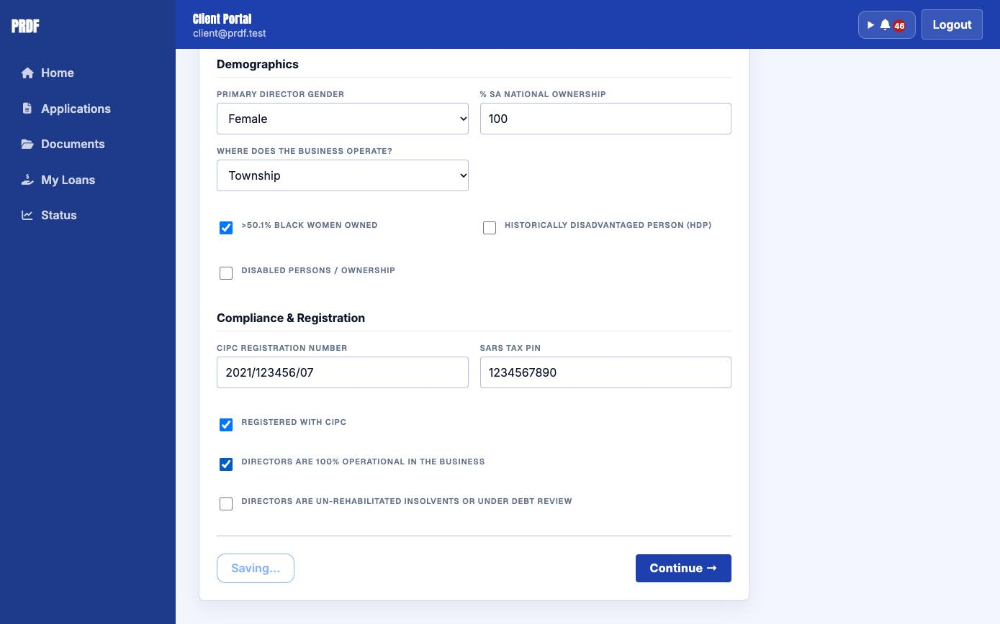
| Field | Notes |
|---|---|
| Business name | Required |
| Industry | Required. Chosen from PRDF's blue and ocean economy list. If yours is not listed, choose All purchase orders outside these industries |
| Street address | Required |
| Address line 2 | Optional |
| City | Required |
| Province | Required — one of the nine provinces |
| Country | Defaults to South Africa |
These answers feed PRDF's development-impact reporting.
| Field | Notes |
|---|---|
| Primary Director Gender | Male, Female, or Prefer not to say |
| % SA National Ownership | Required, 0–100. Leaving it blank is rejected rather than recorded as zero |
| Where does the business operate? | Required — Rural, Township, or City / Urban |
| Three tick boxes | Black women owned, historically disadvantaged person, disabled persons or ownership |
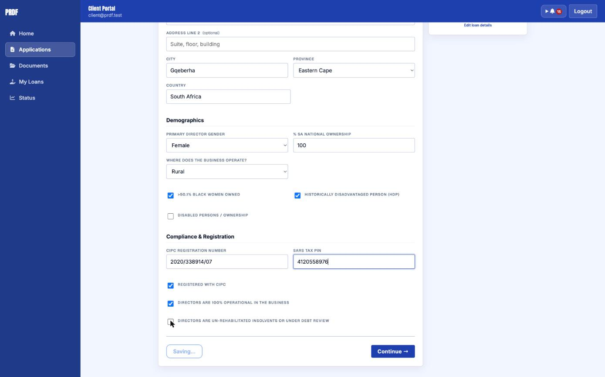
| Field | Notes |
|---|---|
| CIPC Registration Number | Required, e.g. 2020/338914/07 |
| SARS Tax Pin | Required |
| Registered with CIPC | Tick if true |
| Directors are 100% operational in the business | Tick if true |
| Directors are un-rehabilitated insolvents or under debt review | Read this one carefully — it is worded the opposite way round to the others. Leave it unticked if neither applies to you |
Continue → checks the step. Anything missing is flagged under the field and the cursor jumps to the first problem.
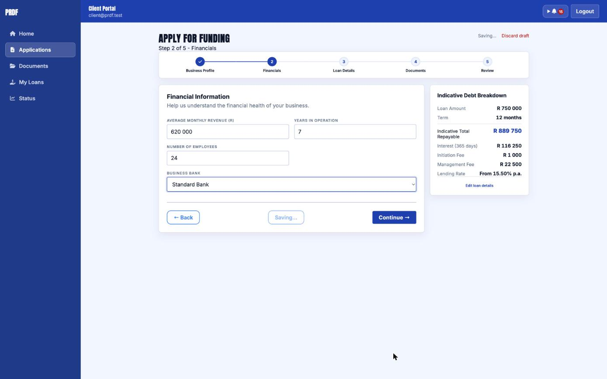
| Field | Notes |
|---|---|
| Average monthly revenue (R) | Must be greater than zero. Enter a plain number — 620000, not R620 000 |
| Years in operation | Zero or more. Trading less than a year? Enter 0 |
| Number of employees | At least 1 — count yourself if you are the owner-operator |
| Banking institution | Choose from the list |
← Back returns to Step 1 with everything you entered still there.
How much you need, for how long, and what for.
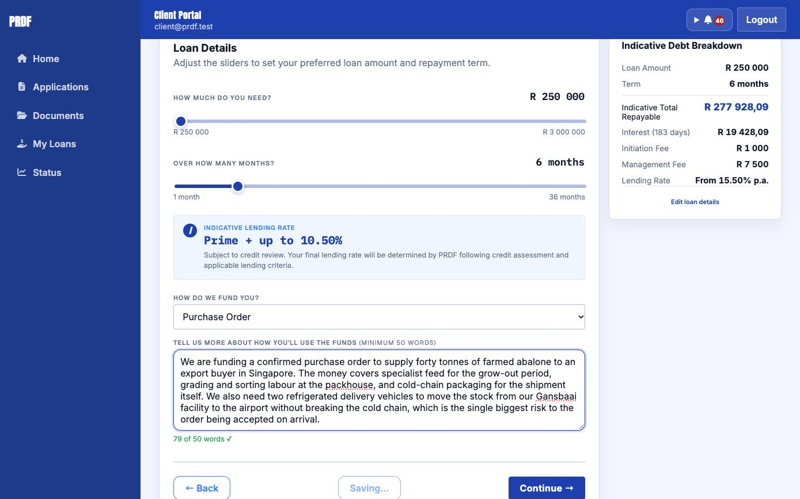
| Control | Range |
|---|---|
| How much do you need? | R250 000 – R3 000 000 |
| Over how many months? | 1 – 36 months |
If you go outside these limits the step is refused and the limit is quoted back to you.
| Field | Notes |
|---|---|
| How do we fund you? | Required. Choose the category that best fits — purchase order, transport, equipment, working capital, and so on |
| Tell us more about how you'll use the funds | Required, at least 30 characters — a few words will be refused |
All ten documents are required. You cannot move on until each one has a file.
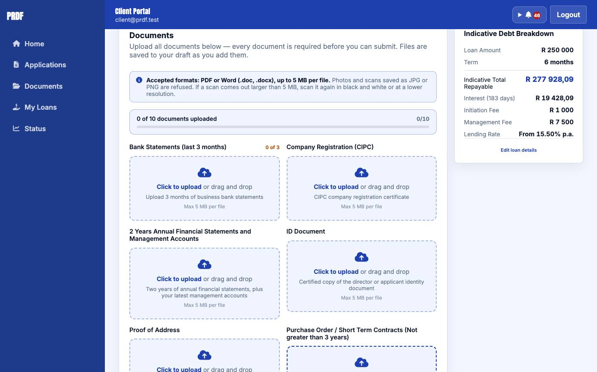
Click a zone to open the file picker, or drag a file onto it. Each file uploads immediately — there is no separate save.
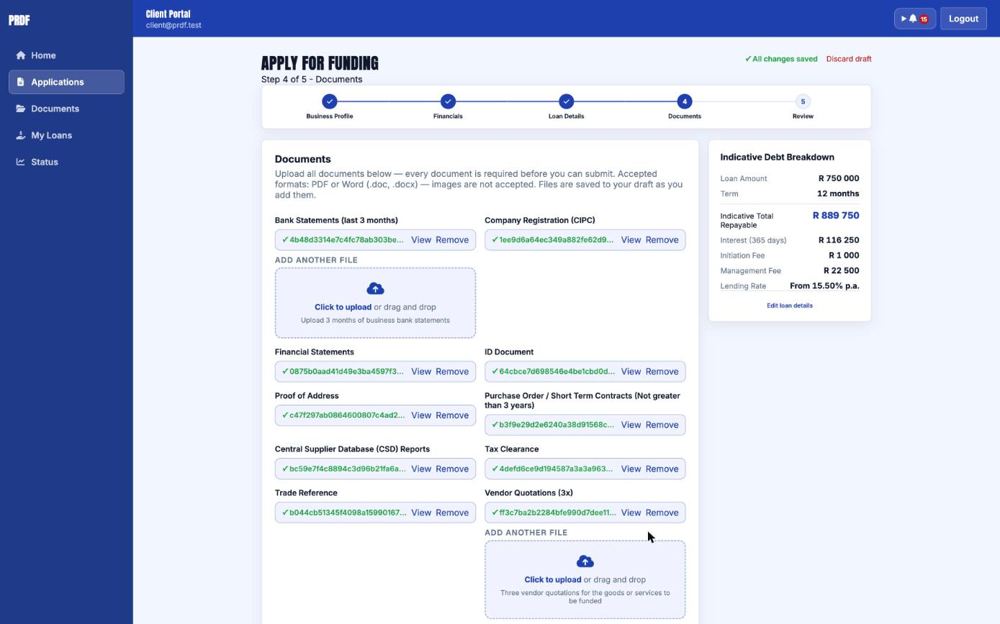
Your work saves itself about a second and a half after you stop typing, and again each time you click Continue. The header tells you: Saving…, then ✓ All changes saved.
You can also click Save & finish later on any step. To pick up where you left off, sign in and either use Resume your draft on Home or Status, or just click Applications.
Check everything before you submit. After this point you cannot edit your application yourself.
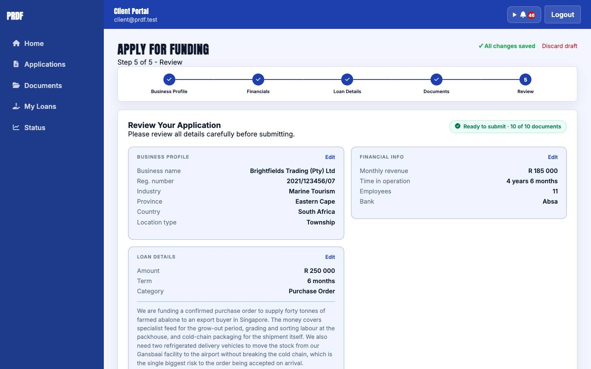
To change something, use ← Back, or Edit loan details on the right-hand panel to jump straight to Step 3. Submit Application stays greyed out until every document is present.
Submit Application opens PRDF's consent declaration: twelve statements covering data privacy (POPIA), policy acknowledgements, and terms and conditions.
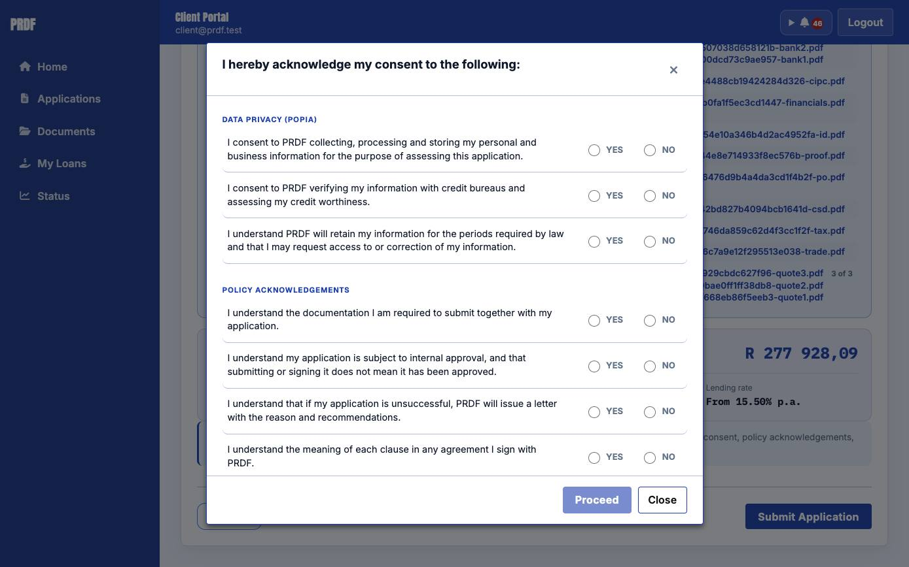
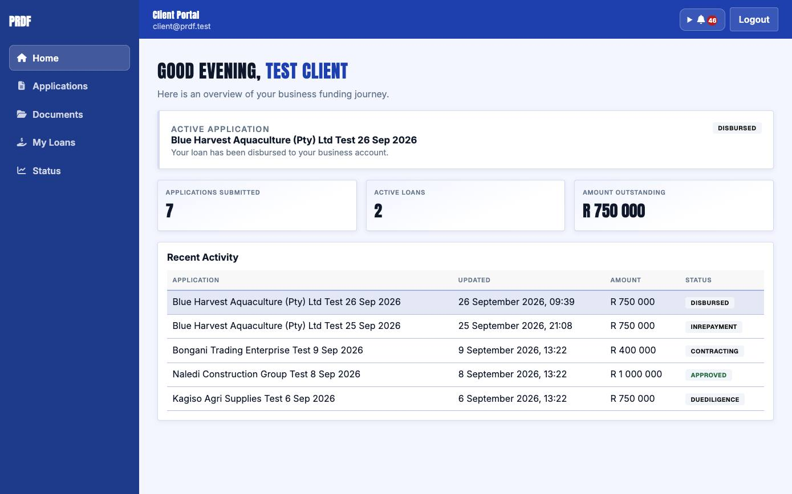
The card shows your most recent active application in plain language, and offers the obvious next step — resume your draft, upload requested documents, or view your approval. Below it are three figures: applications submitted, active loans, and amount outstanding. Recent activity lists your last five applications.
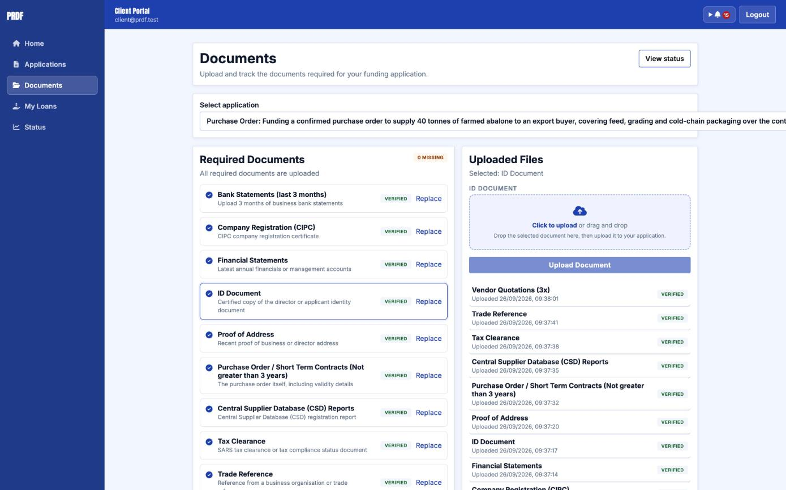
Use this page after you have submitted — most often because PRDF has asked for something more. The left panel is your checklist; the right panel uploads a file against whichever document you have selected.
| Badge | What it means |
|---|---|
| Missing | Not uploaded yet |
| Uploaded | Received, not yet checked |
| Verified | Checked and accepted |
| Rejected | Not accepted — upload a corrected copy |
To replace a document, click Replace beside it, drop the new file in, and click Upload Document.
Status shows every application you have made, each with a progress timeline.
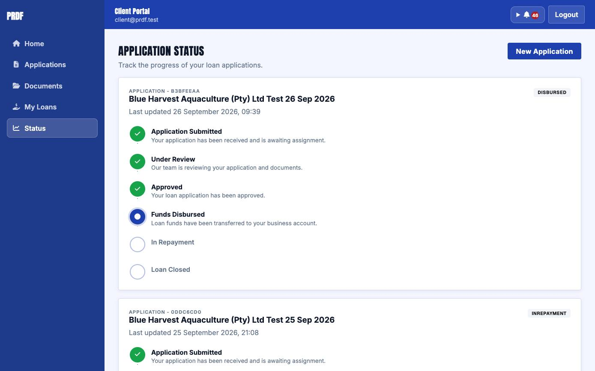
| Milestone | What it means |
|---|---|
| Application Submitted | Received, and waiting to be assigned |
| Under Review | Being assessed, along with your documents |
| Approved | Your loan has been approved |
| Funds Disbursed | Money has been transferred to your business account |
| In Repayment | Your loan is active and being repaid |
| Loan Closed | Fully repaid |
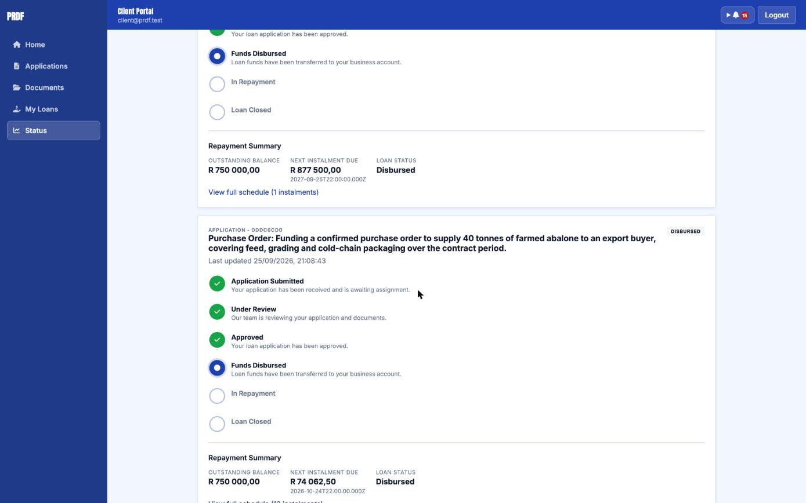
This shows your outstanding balance, your next instalment and when it is due, and the loan's status.
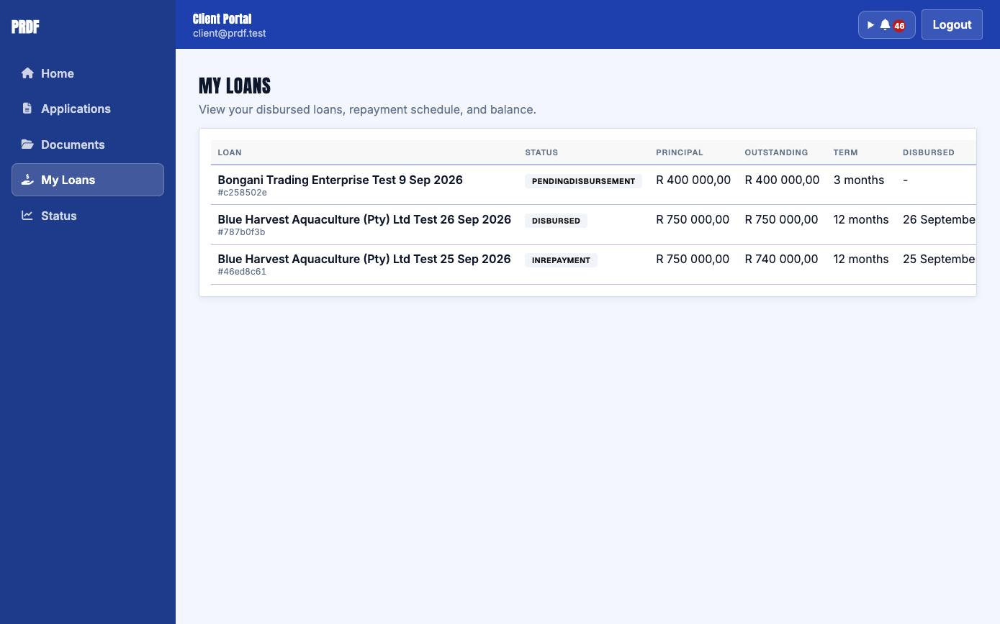
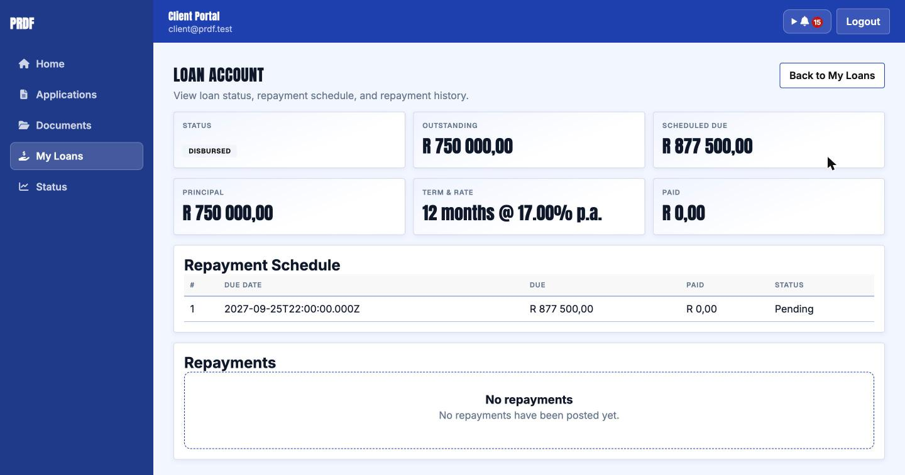
| Figure | What it means |
|---|---|
| Status | Where the loan is — disbursed, in repayment, or closed |
| Outstanding | Capital still owed |
| Scheduled Due | The total of everything on your schedule — capital plus interest |
| Principal | The amount advanced to you |
| Term & Rate | Your months and your actual annual interest rate |
| Paid | Total received from you so far |
There are three charges, plus a penalty if you pay late.
| Charge | How it works | When |
|---|---|---|
| Interest | Calculated daily on the full amount you borrowed | Over the term |
| Initiation fee | A flat R1 000 | Once-off |
| Management fee | 3% of the amount you borrow | Once-off |
| Penalty | Only if you pay late — see 14.3 | Only when late |
Your annual rate is the Prime lending rate plus a margin based on your risk grade, which PRDF sets after assessing your application. Prime is currently 10.5%.
| Risk grade | Margin | Annual rate |
|---|---|---|
| Low | 5.0% | 15.5% |
| Moderate | 6.5% | 17.0% |
| High | 8.5% | 19.0% |
| Worst | 10.5% | 21.0% |
The portal quotes you at the cheapest grade before assessment, which is why it says From 15.50% p.a. Your actual rate can only be the same or higher, and appears on your loan account once your loan is booked.
For example: borrow R750 000 over 12 months at 17%, and you would receive R726 500 (R750 000 less R23 500 in fees) and repay R877 500 at maturity (R750 000 capital plus R127 500 interest).
There is no grace period. A penalty starts accruing the first day you are late, calculated on your capital plus interest at 2% per 30 days. It is worked out in a straight line and never charged on top of earlier penalties.
Everything the portal shows you before approval is indicative. Your final rate follows assessment; your final amount and term may differ from what you asked for; and approval depends on document verification, affordability and PRDF's assessment.
| What you see | What to do |
|---|---|
| "Only .pdf, .doc, .docx files are accepted" | Your file is a photo or image. Save it as a PDF and upload again |
| Submit Application is greyed out | A document is still missing. Check the Documents panel on the review screen for Missing |
| Continue does nothing | Something on the step is invalid. Look for red text — the cursor jumps to the first problem |
| "Add a few details before saving" | There is nothing to save yet. Fill in a field or two first |
| Your draft did not save | Check your internet connection, edit any field to start another save, and wait for ✓ All changes saved |
| Home and Status will not open | Expected if you have not applied yet. They open once you have an application |
| The password reset link does not work | Links expire and work only once. Request a new one from the sign-in page (Section 5.1) |
| "Could not load your profile" | Refresh the page. If it persists, sign out and back in |
| Pages load but tables are empty | A connection problem. Use Retry on the panel |
| Your amount or term is rejected | It is outside R250 000–R3 000 000 or 1–36 months |
| You cannot start a second application | You already have an unfinished one. Finish or discard it first |
| A document shows Rejected | It was not accepted. Upload a corrected copy from the Documents page |
| You were signed out unexpectedly | Your session expired. Sign in again — your saved work is safe |
| The progress timeline looks empty | Known display issue. Trust the status label on the card (Section 12) |
This section records PRDF's acceptance of the Client Portal as delivered and documented in this manual.
Each item can be verified in the live portal by following the section named.
| ✓ | Item | Section |
|---|---|---|
| ☐ | The public site loads and the calculator prices a loan without signing in | 3.1 |
| ☐ | The eligibility self-check returns both outcomes correctly | 4.1 |
| ☐ | A new account can be registered and signed into | 4.2, 5 |
| ☐ | All five application steps accept valid input and reject invalid input clearly | 6–10 |
| ☐ | A draft saves, survives signing out, and resumes where it was left | 9.2 |
| ☐ | All ten document types upload, and can be viewed and removed | 9.1 |
| ☐ | The declaration requires all twelve answers before it will proceed | 10.1 |
| ☐ | An application submits and appears on the Status timeline | 10.2 |
| ☐ | Status changes made by staff appear in the portal | 12 |
| ☐ | A funded loan shows its account, schedule and repayment history | 13 |
| ☐ | Loans are booked at the assessed risk grade, with fees recorded | 14 |
| ☐ | The portal is usable on a mobile phone | 5.4 |
| ☐ | The points noted in Sections 5.1 and 12 have been read and accepted | 5.1, 12 |
By signing below, PRDF confirms that:
Record anything accepted subject to a condition, or excluded from this sign-off.
PRDF Client Portal — User Manual, 1 October 2026.